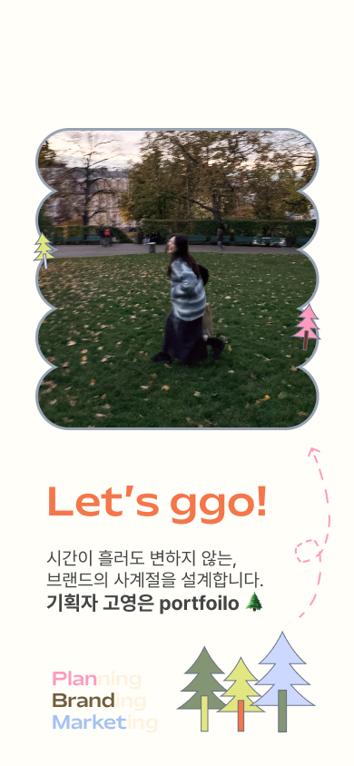
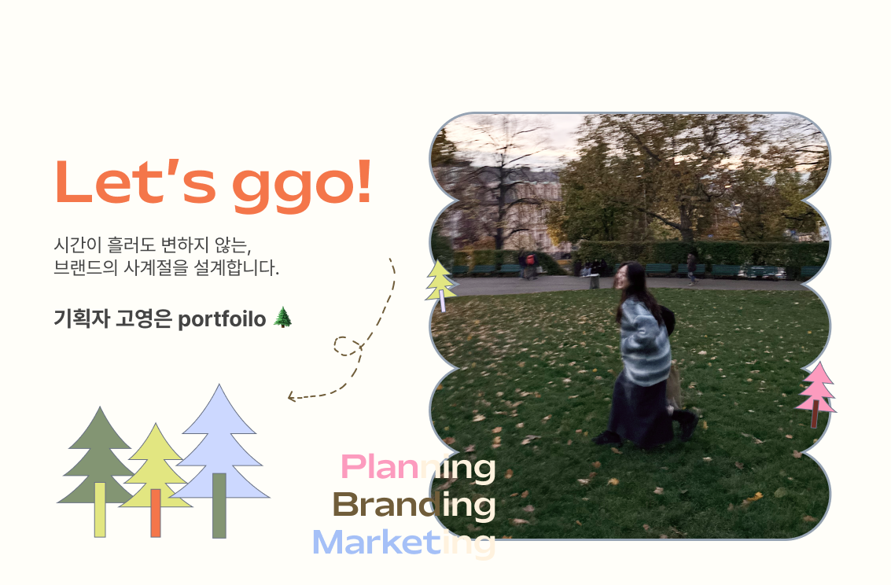
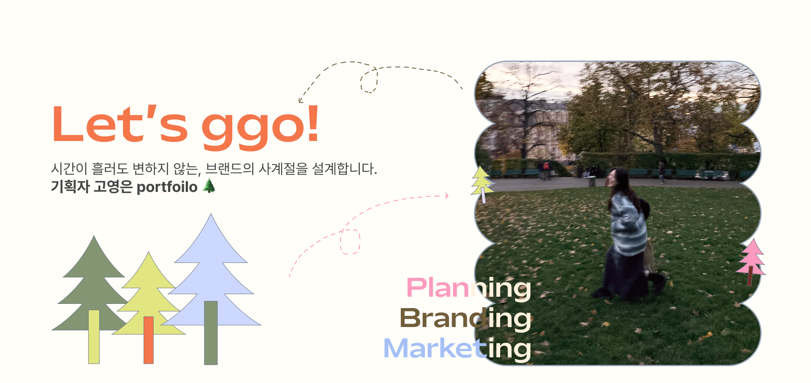
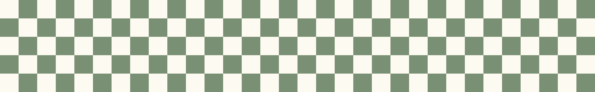
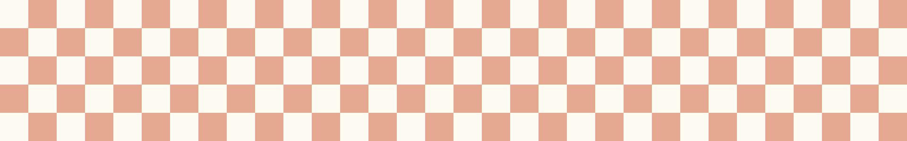
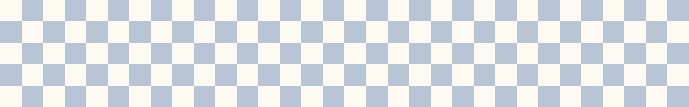

"모든 매력적인 결과물 뒤에는 흔들리지 않는 논리의 뿌리가 있습니다."
좋은 브랜드는 유행이라는 바람에 쉽게 꺾이지 않아야 합니다.
저는 프로젝트의 첫 단계에서
'왜 이 브랜드가 존재해야 하는가'에 대한 근거를
찾습니다. 데이터와 리서치라는 흙 속에서 가장 단단한 전략의 뿌리를
내리는 과정입니다.
<주석>처럼 무에서 유를 만드는 기획부터, 기존 축제의 맥을 짚어내는
배너 디자인까지.
'생각의 깊이'가 디자인의 설득력을 어떻게 만드는지 보여주는
작업들입니다.
Brand Identity/Mobile UX Planning | 브랜드 정의부터 앱 설계까지
전통주 시장의 정보 불균형 해소를 위해 ‘기록’의 가치를 담은 브랜드 <주석>을 기획하고, 아이덴티티 수립부터 BM 설계, UI/UX 프로토타이핑까지 브랜드 탄생의 전 과정을 시스템화했습니다.
Copywriting | 언어유희를 활용한 재치 있는 카피라이팅 및 배너 리디자인
속담 속 ‘재주’와 ‘Jazz’의 유사 발음을 이용한 언어유희적 카피로 페스티벌의 유쾌한 정체성을 시각화했습니다. 2025년 키비주얼을 전략적으로 변주하여 브랜드의 결을 유지하면서도 대중의 시선을 끄는 위트 있는 홍보물을 완성했습니다.
Visual Extension | 축제 키비주얼의 톤앤매너를 유지한 가상의 참가 신청 배너 제작
지역 전통 축제의 역사성을 계승하면서도 MZ 세대의 감각을 자극할 수 있는 역동적인 페스티벌 브랜딩 전략을 수립했습니다. 전통적인 가마 소재를 현대적인 비주얼로 재해석하여 축제에 대한 기대감을 높였으며, 직관적인 정보 전달과 트렌디한 디자인을 통해 타겟의 적극적인 참여와 신청을 이끌어냈습니다.
Visual Metaphor | 작품의 복선을 상징적인 비주얼로 치환한 북커버 리디자인
소설 이면에 숨겨진 긴장감과 은유적 복선을 하나의 상징적인 비주얼로 치환하여 독자의 몰입을 유도한 리디자인 프로젝트입니다. 작품이 가진 특유의 미스터리한 분위기를 극대화하기 위해 색감과 레이아웃을 정교하게 설계했으며, 시각적 몰입감을 통해 책의 본질을 관통하는 서사를 표지에 담아냈습니다.

"기획서는 책상 위가 아니라, 사람들이 숨 쉬는 현장에서 완성됩니다"
전략이 방향이라면, 액션은 동력입니다.
저는 기획자가 쓴 단어 한 줄이 현장에서
어떻게 사람들의 발길을 머물게 하는지 직접
확인하며 성장했습니다. 100%의 기여도는 곧 100%의 책임감을
의미합니다.
수원역로데오테마거리 축제부터 마을 백서까지, 이론에 갇히지 않고 실제 필드에서 부딪히며 얻은 '집행의 근육'을 증명하는 카테고리입니다.
Promotion & Field Directing | 온·오프라인 통합 홍보를 통한 지원율 제고 및 본선 현장 운영
전년 대비 지원율을 2배 이상 높이기 위해 공격적인 홍보를 전개했으며, 부상 중에도 현장을 지키는 집념으로 성공적인 대회 운영을 이끌어냈습니다.
Local Branding | 마을의 아이템 발굴부터 시그니처 축제 기획/운영까지
발안 만세시장만의 고유한 아이템성을 발굴하여 실질적인 브랜드 키트로 제작하고, 지역의 새로운 활력을 불어넣는 '뚝방마켓' 플리마켓 축제를 성공적으로 기획·운영했습니다. 단순히 물리적인 재생을 넘어 로컬의 가치를 콘텐츠화하고, 마을 백서 기록을 통해 주민들의 삶과 지역의 역사를 아카이빙했습니다.
Field Directing | 친환경 가치를 실현한 현장 기획 및 프로그램 운영
지역상권 활성화를 목적으로 컨셉 기획부터 현장 운영까지 전 과정에 100% 기여도로 참여한 프로젝트입니다. 특히 '친환경'이라는 가치를 축제 전반에 녹여내어 지속 가능한 문화 기획의 실현 가능성을 증명했습니다.
Integrated Marketing | 로컬 자산의 매력을 알리는 통합 마케팅
세계유산 수원화성의 가치를 시민들에게 친숙하게 전달하기 위해 온·오프라인을 아우르는 통합 마케팅 전략을 수행했습니다. 지역 문화 자산의 매력을 극대화할 수 있는 스토리텔링을 발굴하고, 매체별 타겟에 맞춘 홍보 콘텐츠를 기획하여 축제에 대한 대중의 접근성과 참여 경험을 한층 높였습니다.

"단단한 전략과 뜨거운 실행 끝에, 타겟의 눈에 닿는 마지막 선명함을 만듭니다."
뿌리가 깊고 줄기가 튼튼하다면, 그 끝에는 반드시 아름다운 꽃이
피어야 합니다.
기획의 의도가 왜곡 없이 전달되도록 비주얼의
밀도를 높이는 일. 그것이 제가 정의하는 크리에이티브의
마침표입니다.
북커버의 은유부터 썸네일의 심리전까지. 매체의 특성을 이해하고 사용자에게 '말을 거는' 비주얼 커뮤니케이션 결과물들을 모았습니다.
Experience Design | 기록의 가치를 시각화하여 브랜드의 감성을 전달하는 디자인
기록이라는 경험이 주는 따뜻한 가치를 독자에게 전달하기 위해 정교한 텍스처와 레이아웃을 설계한 디자인 프로젝트입니다. 책의 내용이 가진 감성적인 무드를 시각적 디테일로 승화시켰으며, 단순히 정보를 담는 표지를 넘어 독자가 책을 쥐는 순간부터 브랜드의 철학을 경험할 수 있도록 비주얼 커뮤니케이션에 집중했습니다.
Psychology Analysis | 타겟의 시선을 붙드는 데이터 기반 디자인
찰나의 순간에 타겟의 시선을 붙들고 행동을 유도하기 위해 심리학적 분석과 데이터 기반의 디자인 전략을 적용했습니다. 콘텐츠의 핵심 메시지를 가장 효과적으로 전달할 수 있는 비주얼 모티프를 설정하고, 클릭률을 극대화할 수 있는 색상 및 타이포그래피 배치를 통해 콘텐츠 성과에 실질적으로 기여했습니다.
Visual Identity | 타이포그래피 중심의 시각 체계 구축 및 매거진 스타일 레이아웃 설계
'엎드림(경배)'과 'Dream(꿈)'이라는 이중적 의미를 시각적으로 극대화하기 위해 텍스트를 오브제화한 타이포그래피 키비주얼을 제작했습니다. 블루 톤의 그라데이션과 노이즈 효과를 결합하여 현대적인 역동성과 경건함을 동시에 구현했으며, 대각선 구조의 레이아웃 설계로 정보의 위계를 명확히 전달하는 데 집중했습니다.
배너 및 북커버 디자인
배너 및 북커버 디자인
배너 및 북커버 디자인